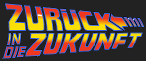

Die NWBib und das Web
Adrian Pohl, hbz
16. DINI Jahrestagung, 27.10.2015, Frankfurt/Main

@prefix bibo: <http://purl.org/ontology/bibo/> .
@prefix dct: <http://purl.org/dc/terms/> .
@prefix lo: <http://lobid.org/organisation/> .
@prefix lv: <http://purl.org/lobid/lv#> .
@prefix rdfs: <http://www.w3.org/2000/01/rdf-schema#> .
@prefix skos: <http://www.w3.org/2004/02/skos/core#> .
@prefix schema: <http://schema.org/> .
<http://lobid.org/resource/NWBib>
a lv:Bibliography , bibo:Collection ;
rdfs:label "Nordrhein-Westfälische Bibliographie"@de ,
"North Rhine-Westphalian Bibliography"@en ;
skos:altLabel "NWBib" ;
dct:creator lo:DE-6 , lo:DE-61 ;
dct:contributor lo:DE-605 ;
dct:description "Die Nordrhein-Westfälische Bibliographie verzeichnet die
Literatur über das Land Nordrhein-Westfalen, seine Landesteile und Orte
sowie über Personen, die im Land wirken oder gewirkt haben. Sie umfasst
alle Lebensbereiche und Sachgebiete in Geschichte und Gegenwart. Die
Nordrhein-Westfälische Bibliographie ist eine der umfangreichsten
Regionalbibliographien Deutschlands, die mehr als 320.000 Titel (Stand:
Oktober 2012) nachweist. Seit 1983 wird sie von den Universitäts- und
Landesbibliotheken Düsseldorf und Münster in Zusammenarbeit mit dem
Hochschulbibliothekszentrum des Landes Nordrhein-Westfalen (hbz) erstellt."@de ;
rdfs:seeAlso <http://www.landesbibliothek-nrw.de/aufgaben/nrw_bibliographie/> .Die NWBib
- Nordrhein-Westfälische Bibliographie
- Monographien, Aufsätze und mehr über Nordrhein-Westfalen
- Erstes Berichtsjahr: 1983
- Ca. 365.000 Einträge (Stand: Oktober 2015)
- Redaktionen in ULBs Düsseldorf und Münster in Zusammenarbeit mit der ULB Bonn
- Technische Umsetzung: hbz

Druckwerk

Foto: Adrian Pohl, CC0

NWBib im hbz-VK
- Seit Berichtsjahr 1993: „Online“-Katalogisierung
- Vorrangiges Ziel: eine effizientere Druckproduktion
Mit Open Source in das Web I
Mit der Einführung dieses Herstellungsverfahrens [der Druckversion, AP] stand der NWB nun auch der Weg ins Internet offen. Dies wurde erreicht durch Ausnutzen von Public-Domain-Werkzeugen, sogenannten LaTeX-to-HTML-Tools.


NWBib 1998, Quelle: Internet Archive
HTML zum Browsen
"Um das Marketing dieses zusätzlichen Angebotes der Bibliographie auf dem Internet brauchten wir uns zudem auch nicht zu kümmern, das haben die Gesetze des World Wide Web sozusagen über nacht erledigt. Die NWB-Seiten wurden schon bald von den Suchmaschinen entdeckt, eingelesen und indiziert. So kann ein Benutzer auch über eine Recherche in einer Suchmaschine wie z.B. Alta Vista als Treffer auf eine NWB-Seite geführt werden"
"Um das Marketing dieses zusätzlichen Angebotes der Bibliographie auf dem Internet brauchten wir uns zudem auch nicht zu kümmern, das haben die Gesetze des World Wide Web sozusagen über nacht erledigt. Die NWB-Seiten wurden schon bald von den Suchmaschinen entdeckt, eingelesen und indiziert. So kann ein Benutzer auch über eine Recherche in einer Suchmaschine wie z.B. Alta Vista als Treffer auf eine NWB-Seite geführt werden"
URLs & HMTL for the win!
NWBib 1996, Quelle: Internet Archive

Parallel: DB zum Suchen
2005 verschwindet die NWBib vorerst vollständig im Deep Web:


Mit Open Source in das Web II


lobid
- Kerndienst LOD-API: Bereitstellung von Linked (Open) Data über eine Programmierschnittstelle (API)
- Datenbasis
- hbz-Verbunddaten: /resource
- GND: /subject
- Adressdaten aus dem Sigelverzeichnis (& der DBS): /organisation(s)
Vergangenheit
- 2010: Erste Freigabe von Daten
- 2010-2013: Linked-Data-Forschung und -Entwicklung
- Oktober 2013: lobid-API in Produktion
LOD-API: Was ist das?
- Erweiterte Suche über URL
- Antwort: strukturierte Daten (hier: JSON) <- leicht und schnell zu verarbeiten
- Anstatt bloße Labels: Links auf weitere strukturierte Daten (Normdatenprinzip)
- Schnell, weil basierend auf Suchmaschinentechnologie
Beispiel
Beispiel
Beispiel: Antwort
[
{
"http://sindice.com/vocab/search#totalResults" : 16,
"@id" : "http://lobid.org/resource?issued=1998&publisher=dumont&set=nwbib"
},
{
"@graph" : [
{
"preferredNameForThePerson" : "Mack, Heinz",
"@id" : "http://d-nb.info/gnd/118729918",
"preferredName" : [
"Mack, Heinz",
"Mack, Heinz, 1931-"
]
},
{
"preferredNameForThePerson" : "Schmied, Wieland",
"@id" : "http://d-nb.info/gnd/118795244",
"preferredName" : "Schmied, Wieland"
},
{
"@id" : "http://d-nb.info/gnd/120242885",
"preferredNameForThePerson" : "Agthe-Natter, Marion",
"preferredName" : "Agthe-Natter, Marion"
},
{
"preferredName" : "Bildband",
"@id" : "http://d-nb.info/gnd/4145395-5",
"preferredNameForTheSubjectHeading" : "Bildband"
},
{
"@type" : [
"http://purl.org/dc/terms/BibliographicResource",
"http://purl.org/ontology/bibo/Book"
],
"extent" : "319 S. : zahlr. Ill.",
"medium" : "http://rdvocab.info/termList/RDAproductionMethod/1010",
"publisher" : "DuMont",
"contributor" : "http://d-nb.info/gnd/120242885",
"creator" : "http://d-nb.info/gnd/118729918",
"issued" : "1998",
"@id" : "http://lobid.org/resource/BT000158992"
}
]
}
]Vorteile
- Adressierbarkeit:
- jeder Titel, jede Normdatenressource, jede Organisation hat eine feste URL
- auch: jede Suche hat eine URL
- Einfache Nutzung
- Wertvolle Informationen in verlinkten Daten, z. B. Geodaten
Von Aleph nach Elasticsearch
- Export von Aleph-XML
- Überführen der Daten von MAB/MARC-basiertem Format nach RDF
- mit Metafacture
- Konfiguration: 1.500 Zeilen XML
- Außerdem: Anreicherung mit Links zu externen Quellen (LOD-GND, Gutenberg lobid Organisations etc.)


URLs & HMTL for the win!

Der neue NWBib-Auftritt
- Noch im Entwicklungsstadium
- Seit 2014: Entwicklung auf Basis der lobid-API
- Basiert auf der lobid-API, d.h.:
- NWBib-Anfragen gehen an lobid-API
- Antwort-Daten in JSON werden mit Play & Bootstrap in HTML-Sicht überführt
schema.org-Markup
<script type="application/ld+json">
{
"@context": "http://schema.org",
"@type": "CreativeWork",
"name" : "Tempo 300",
"publisher" : "Verl.-Gruppe Bahn",
"about" : ["http://d-nb.info/gnd/4194341-7","http://d-nb.info/gnd/4031483-2","http://d-nb.info/gnd/4052370-6","http://d-nb.info/gnd/4018118-2"],
"contributor" : "http://d-nb.info/gnd/1051383285",
"isPartOf" : "http://lobid.org/resource/NWBib",
"offers" : ["http://lobid.org/item/HT013641045:DE-290:EGM%2019579","http://lobid.org/item/HT013641045:DE-929:C2003A%2F473"],
"numberOfPages" : "92 S.",
"isPartOf" : "http://lobid.org/resource/HT015323597",
"datePublished" : "2002",
"inLanguage" : "http://id.loc.gov/vocabulary/iso639-2/deu",
"about" : "http://purl.org/lobid/nwbib#s555000",
"about" : "http://purl.org/lobid/nwbib-spatial#n03"
}
</script>Demo
Wir sehen uns in der Zukunft!
Diese Folien stehen – soweit nicht anders angegeben – unter der Creative Commons Public Domain Dedication (CC0): http://creativecommons.org/publicdomain/zero/1.0/.

Referenz
Schmidt, Ronald Michael (1998): Die Nordrhein-Westfälische Bibliographie Online. In: Bibliographische Datenbanken im Internet [Elektronische Ressource] : DFG-Kolloquium vom 4. bis 5. Dezember 1997 an der Herzogin Anna Amalia Bibliothek. URL (Internet Archive): http://web.archive.org/web/20000310115644/http://www.weimar-klassik.de/kolloquien/e5i_224d.html
Die NWBib und das Web
Adrian Pohl, hbz
16. DINI Jahrestagung, 27.10.2015, Frankfurt/Main
Zurück in die Zukunft – die NWBib und das Web
By acka47
Loading comments...